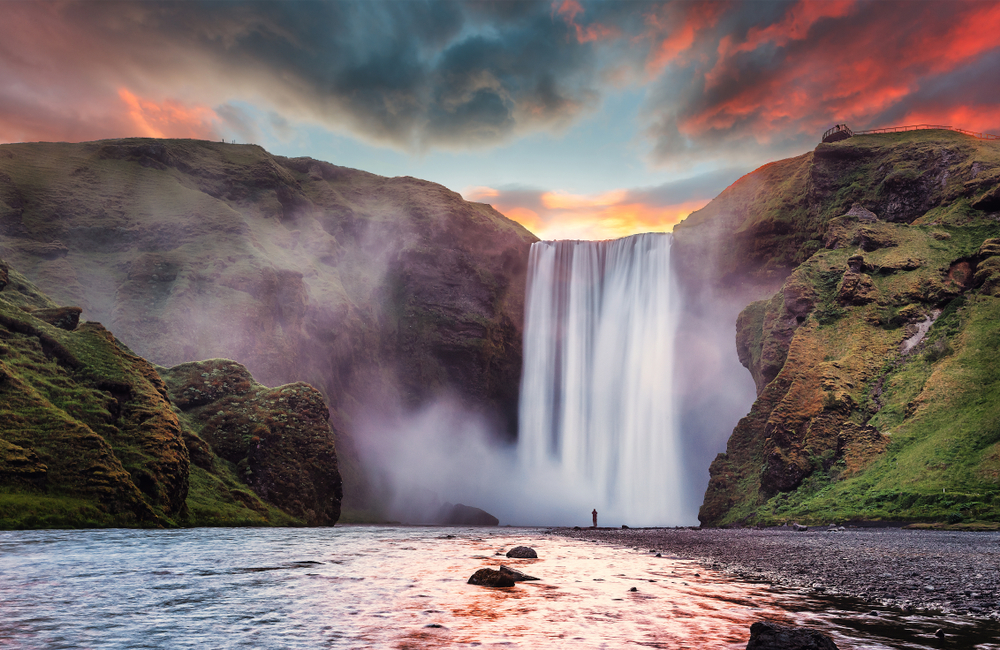

Exploring the Magic of Paris
Paris, the city of lights, offers an unforgettable experience with its historic sites and charming cafes. From the iconic Eiffel Tower to the artistic treasures of the Louvre, every corner of Paris is steeped in culture.
For more information, visit the official Paris tourism website.
Uncovering the Mysteries of Iceland
Iceland boasts a landscape like no other with its glaciers, waterfalls, and geothermal activity. Whether it's the beauty of Skógafoss or the otherworldly Black Sand Beach, Iceland is a paradise for nature lovers.

Discover more on the official Iceland tourism website.
Experiencing the Tranquility of Kyoto
Kyoto is a haven for those seeking serenity and beauty. The city’s ancient temples, such as Kinkaku-ji (Golden Pavilion), and lush gardens provide a peaceful escape from the bustling world.
Plan your visit through the official Kyoto tourism website.